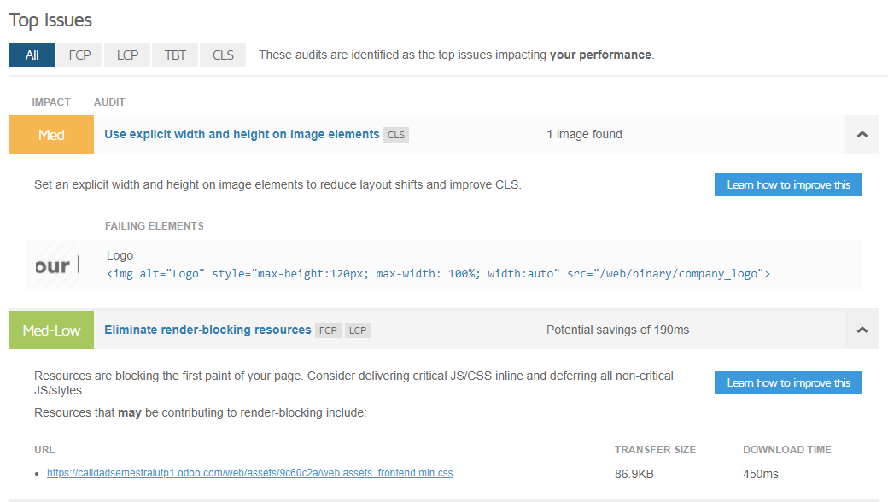

CAPITULO IV
1. METRICAS DEL PROYECTO
- Tiempo de respuesta del servidor
- Mide el tiempo que tarda el servidor en responder a las solicitudes. Un tiempo de respuesta rápido es indicativo de un servidor eficiente.
- Tiempo de carga de la página
- Evalúa cuánto tiempo tarda en cargarse una página en Odoo. Un tiempo de carga rápido es esencial para mejorar la experiencia del usuario.
- Uso de CPU
- Monitoriza el porcentaje de uso de la CPU del servidor. Un alto uso de la CPU puede indicar una carga excesiva o problemas de rendimiento.
- Uso de memoria
- Controla la cantidad de memoria RAM utilizada por el servidor. Un uso eficiente de la memoria es crucial para evitar cuellos de botella.
- Tasa de errores
- Registra y analiza los errores del servidor. Un bajo índice de errores sugiere estabilidad y robustez en el sistema.
- Disponibilidad
- Mide el tiempo durante el cual el servidor está disponible y operativo. Un alto porcentaje de disponibilidad es esencial para garantizar el acceso constante a la aplicación.
2. HERRAMIENTAS DE MEDICIÓN
a. ENCUESTAS
Las encuestas permiten crear, compartir y analizar cuestionarios para recoger información de los clientes, empleados o socios. Con Odoo, se puede crear encuestas personalizadas, con diferentes tipos de preguntas, opciones y diseños. También se puede enviar las encuestas por correo electrónico o compartir un enlace, y ver los resultados en tiempo real o exportarlos a otros formatos. También se puede utilizar las encuestas para recabar la opinión y la satisfacción de los usuarios con el sistema de gestión del conocimiento, así como para identificar sus necesidades, expectativas y sugerencias de mejora. Por último, se puede utilizar las encuestas para evaluar el éxito de eventos recientes, medir la satisfacción de los clientes (o empleados) y obtener más información sobre los cambios de opinión en el mercado.
b. BENCHMARKING U OTRAS HERRAMIENTAS
El benchmarking permite comparar el rendimiento, la calidad y la innovación de tu empresa con los de otras empresas o sectores que sean referentes en la industria. Con Odoo, se puede integrar otras herramientas de análisis, como Tableau, que permiten crear reportes, gráficos y dashboards con los datos obtenidos del benchmarking. Así, podemos identificarlas fortalezas y debilidades, y establecer objetivos y planes de mejora. También, se puede utilizar el benchmarking para comparar métricas concretas del negocio, como ventas, ingresos, costos, satisfacción, etc. Tipos de benchmarking que se utilizaran: Interno, externo y funcional.
• Benchmarking interno: Se trata de comparar el rendimiento, la calidad y la satisfacción de los diferentes módulos, procesos o departamentos que utilizan Odoo dentro de la misma organización. Por ejemplo, se podría medir el tiempo, el costo y el beneficio de las operaciones de ventas, compras, inventario, contabilidad, etc. que se realizan con Odoo. También se podría evaluar el grado de uso, adaptación y personalización de Odoo por parte de los usuarios internos. El objetivo es identificar las mejores prácticas, las áreas de mejora y las oportunidades de innovación dentro de la propia empresa.
• Benchmarking externo: Se trata de comparar el rendimiento, la calidad y la satisfacción de Odoo con los de otras herramientas similares que utilizan otras empresas del mismo sector o mercado. Por ejemplo, se podría analizar el nivel de funcionalidad, integración, escalabilidad, seguridad, soporte y precio de Odoo frente a otros sistemas de gestión empresarial como SAP, Oracle, Microsoft Dynamics, etc. También se podría contrastar el grado de satisfacción, fidelidad y recomendación de los clientes que usan Odoo con los de los clientes que usan otras herramientas. El objetivo es conocer la posición competitiva, las ventajas y las desventajas de Odoo respecto a sus alternativas.
• Benchmarking funcional: se trata de comparar el rendimiento, la calidad y la satisfacción de Odoo con los de otras herramientas que no son directamente comparables, pero que pueden ofrecer soluciones o inspiración para algún aspecto específico de Odoo. Por ejemplo, se podría examinar el diseño, la usabilidad, la accesibilidad y la experiencia de usuario de Odoo con los de otras plataformas web o aplicaciones móviles que sean referentes en estos aspectos. También se podría explorar el grado de innovación, creatividad y diferenciación de Odoo con los de otras herramientas que hayan introducido nuevas funcionalidades, modelos de negocio o formas de interacción con los usuarios. El objetivo es aprender de las mejores prácticas, las tendencias y las oportunidades de otros sectores o mercados que puedan aplicarse a Odoo.
3. CASOS DE PRUEBA
trata de definir los escenarios que permitan verificar el correcto funcionamiento del sistema de gestión del conocimiento,
así como los criterios de aceptación y los resultados esperados. Algunos posibles casos de prueba son:
Caso de prueba 1: Crear un documento de conocimiento en el repositorio.
o
Precondiciones: El usuario debe tener permiso para crear documentos y acceder al repositorio.
o Pasos:
1. Ir al módulo de gestión del conocimiento y seleccionar el repositorio deseado.
2. Hacer clic en el botón “Crear” y rellenar los campos obligatorios: título, categoría, etiquetas, resumen y contenido.
3. Hacer clic en el botón “Guardar”.
Resultado esperado: El documento se crea correctamente y se muestra en el repositorio con los datos introducidos.
Criterio de aceptación: El documento se puede visualizar, editar, descargar y compartir desde el repositorio.
Caso de prueba 2: Inscribirse a un curso de e-learning.
Precondiciones: El usuario debe estar registrado y haber iniciado sesión en el sistema.
Pasos:
1. Ir al módulo de e-learning y seleccionar el curso deseado.
2. Hacer clic en el botón “Inscribirse” y confirmar la inscripción.
3. Acceder al contenido del curso y completar las lecciones y evaluaciones requeridas.
Resultado esperado: El usuario se inscribe correctamente al curso y puede acceder al contenido y obtener una calificación.
Criterio de aceptación: El usuario puede ver su progreso, sus resultados y su certificado desde el módulo de e-learning.
Caso de prueba 3: Realizar una consulta en el foro de conocimiento.
Precondiciones: El usuario debe estar registrado y haber iniciado sesión en el sistema.
Pasos:
1. Ir al módulo de foro de conocimiento y seleccionar el foro deseado.
2. Hacer clic en el botón “Nueva pregunta” y rellenar los campos obligatorios: título, descripción, etiquetas y recompensa.
3. Hacer clic en el botón “Publicar”.
4. Esperar a recibir respuestas de otros usuarios y seleccionar la mejor respuesta si procede.
Resultado esperado: El usuario publica correctamente su pregunta y recibe respuestas de otros usuarios.
Criterio de aceptación: El usuario puede ver su pregunta, las respuestas y los comentarios desde el módulo de foro de conocimiento.
4. APLICACIÓN DE PRUEBAS DE TESTING e Informe de Evaluacion
se trata de ejecutar los casos de prueba definidos y comprobar si los resultados obtenidos coinciden con los esperados. Algunos pasos para aplicar las pruebas de testing son:Crear un plan de prueba: Se trata de definir el objetivo, el alcance, los recursos y el cronograma de las pruebas. Para crear un plan de prueba en Odoo, se debe ir al módulo de testing y hacer clic en el botón “Crear”. Se debe rellenar los campos obligatorios: nombre, proyecto, versión y responsable. También se puede añadir una descripción y adjuntar documentos si se desea. Una vez creado el plan de prueba, se puede ver en el módulo de testing y se puede editar o eliminar si se necesita.
Añadir casos de prueba al plan de prueba: Se trata de seleccionar los casos de prueba que se van a ejecutar dentro del plan de prueba. Para añadir casos de prueba al plan de prueba en Odoo, se debe abrir el plan de prueba y hacer clic en el botón “Añadir”. Se debe seleccionar el caso de prueba deseado de la lista o crear uno nuevo si no existe. También se puede asignar un ejecutor y una prioridad al caso de prueba si se desea. Una vez añadido el caso de prueba, se puede ver en el plan de prueba y se puede editar o eliminar si se necesita.
Ejecutar los casos de prueba: Se trata de realizar los pasos de los casos de prueba y registrar los resultados obtenidos. Para ejecutar los casos de prueba en Odoo, se debe abrir el plan de prueba y hacer clic en el botón “Ejecutar”. Se debe seguir los pasos del caso de prueba y marcar el resultado como “Pasado”, “Fallado” o “Bloqueado” según corresponda. También se puede añadir un comentario y adjuntar evidencias si se desea. Una vez ejecutado el caso de prueba, se puede ver el registro de ejecución en el plan de prueba y se puede editar o eliminar si se necesita.


5. INFORMES DE EVALUACIÓN
Se trata de generar informes que resuman los resultados de las pruebas de testing y que permitan extraer conclusiones y recomendaciones. Para generar informes de evaluación en Odoo, se puede utilizar el módulo de reportes, que permite crear reportes personalizados con gráficos, tablas y filtros, y acceder a ellos desde cualquier dispositivo. También se puede programar la generación y el envío de los reportes a los interesados. Algunos informes de evaluación son:• Informe de cobertura de pruebas: Muestra el porcentaje de requisitos, funcionalidades y casos de prueba que se han cubierto con las pruebas de testing. Permite evaluar el grado de completitud y exhaustividad de las pruebas.
• Informe de defectos de pruebas: Muestra el número y la distribución de los defectos encontrados durante las pruebas de testing, según su severidad, prioridad, estado y responsable. Permite identificar las áreas críticas y las oportunidades de mejora del sistema de gestión del conocimiento.
• Informe de calidad de pruebas: Muestra el número y el porcentaje de casos de prueba que han pasado, fallado o bloqueado durante las pruebas de testing, según su prioridad, ejecutor y fecha. Permite medir el nivel de calidad y fiabilidad del sistema de gestión del conocimiento.
a. GRAFICOS E INDICADORES DE EVALUACIÓN OBTENIDOS